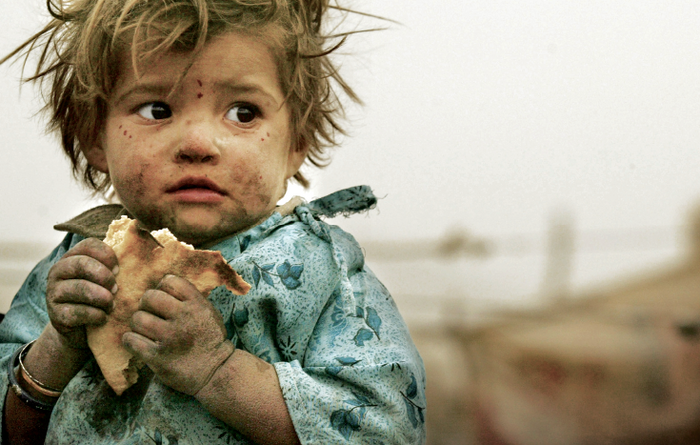
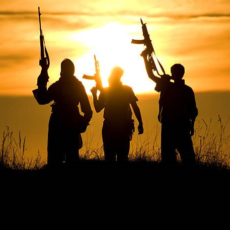

Effects of Poverty on Society
Poverty has many causes and impacts, including hunger, sickness, and poor sanitation. To put it another way, not having food indicates you're poor, but being poor also means you can't buy food or safe drinking water. Poverty's impacts are frequently intertwined, and one problem rarely happens on its own. Diseases are spread by poor sanitation, and poverty and a lack of clean water make people even more vulnerable. Discrimination is common in impoverished countries and communities, trapping them in a cycle of poverty.


Children
Since the 1960s, the number of children living in poverty has risen. Children have the least degree of control over their situations and have the least amount of choice. They can't do much to aid their family, and they shouldn't have to. They can usually be enlisted in child work by the age of six. Children are affected by nearly every aspect of poverty, including poor infrastructure, unemployment, starvation, domestic abuse, child labor, and disease.

Violence
Terrorism is fueled by poverty, which causes people to join terrorist groups as a result of their suffering and frustration. According to research, countries with weak governments, shaky institutions, and limited civil rights are ideal breeding grounds for terrorist activities. Countries in the midst of challenging transitions—for example, regularly confront political instability with the blurring of some rules and laws, from autocratic to democratic regimes.